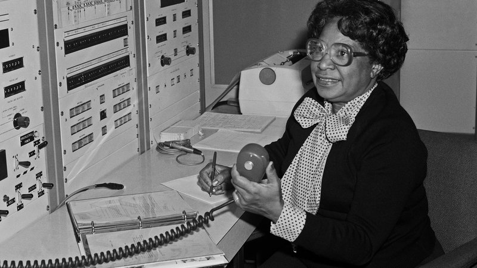
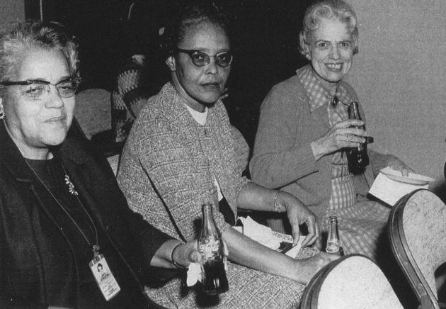

Les figures de l'ombre

Leur incroyable histoire:
Katherine Johnson, Dorothy Vaughan et Mary Jackson nées dans les années 1910-1920, elles ont toutes grandi dans le racisme contre les afro-américains et ont grandi dans des milieux assez pauvres.
Elles ont toutes découvert un grand intérêt pour les mathématiques et dans les années 50, elles sont toutes rentrées dans la NASA.
C'est à cette époque que les États-Unis et l’URSS se livrent un conflit pour la conquête de l'espace et sur le premier pays qui arrivera à envoyer un homme sur la lune ; il faut se rappeler qu'à cette époque l'URSS avait une grande avancée sur les États-Unis après avoir envoyé le premier homme dans l'espace et être revenu sur terre.
Ces femmes étaient considérées comme des «ordinateurs à jupe », elles calculaient plus rapidement que les calculatrices les plus sophistiquées de l'époque avec une meilleure précision au chiffre après la virgule; leur rôle à la NASA était de calculer les trajectoires de la fusée.

En 1962 elles ont participé au lancement de la fusée américaine qui allait faire 3 fois le tour de la terre en faisant les calculs de trajectoire, apparemment c'est le chef de l'équipage John Glenn qui n'avait pas une grande confiance dans les ordinateurs qui a insisté pour que ce soient ces femmes qui fassent les calculs de la trajectoire de sa fusée.
Enfin en 1969 elles ont participé au projet Apollo qui se conclut par la victoire des États-Unis sur la conquête spatiale.

Conclusion :
Katherine Johnson, Dorothy Vaughan et Mary Jackson ont grandement mené à la victoire des États-Unis contre l'URSS sur la conquête spatiale.
Leurs actions a aussi beaucoup contribué à l'égalité entre les noirs et les blancs, elles sont les premières femmes aussi les premières afro-américaine à avoir intégré des équipes d’hommes blancs à la NASA et avoir participé à des réunions où seuls les hommes avaient le droit d'y assister.
Elles ont aussi révolutionné le monde des mathématiques en participant à la création de calculatrice bien plus rapide et plus précise qui finissent par les dépasser et de nouvelles notions que nous utilisons encore aujourd'hui.
